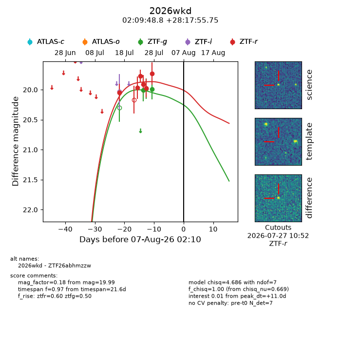
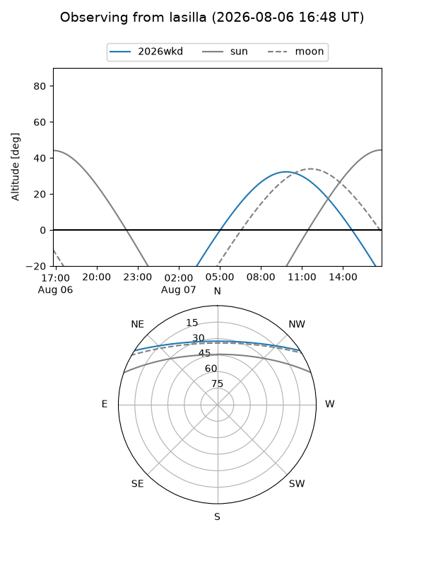
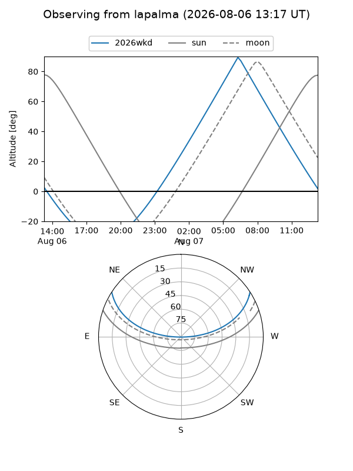
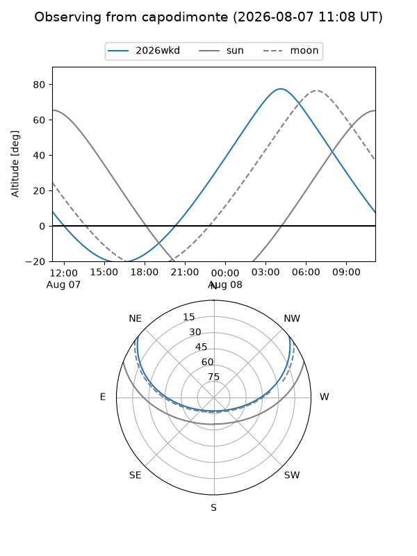
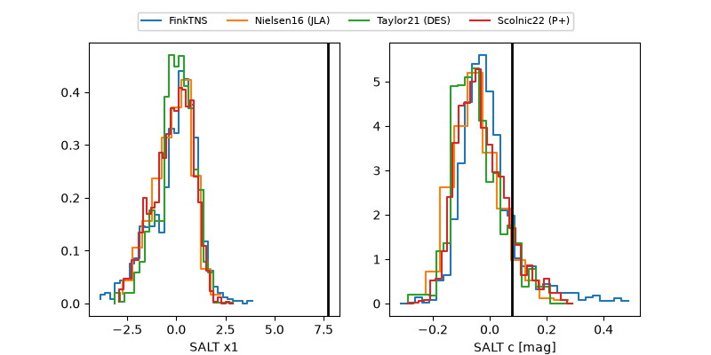

2026wkd
Target 2026wkd at 2026-08-07 13:30
Aliases and brokers:
FINK-ZTF: ztf.fink-portal.org/ZTF26abhmzzw
Lasair-ZTF: lasair-ztf.lsst.ac.uk/objects/ZTF26abhmzzw
ALeRCE-ZTF: alerce.online/object/ZTF26abhmzzw
YSE-PZ: ziggy.ucolick.org/yse/transient_detail/2026wkd
TNS name: wis-tns.org/object/2026wkd
Direct TNS query: direct search
alt names
ZTF26abhmzzw (ztf,fink_ztf)
2026wkd (tns,yse)
Coordinates:
equatorial (ra, dec) = 32.4532,+28.29882
equatorial (HMS+DMS) = 02:09:48.76,+28:17:55.75
galactic (l, b) = (143.1867,-31.47178)
Flags:
TNS type: nan
peak dt: +11.5
Photometry:
last ztfg=19.99, ztfr=19.73
3 ztfg, 6 ztfr detections
Lightcurve

Visibility



Additional plots
